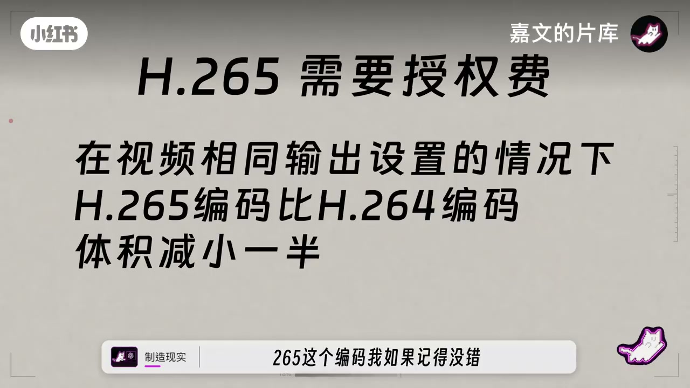
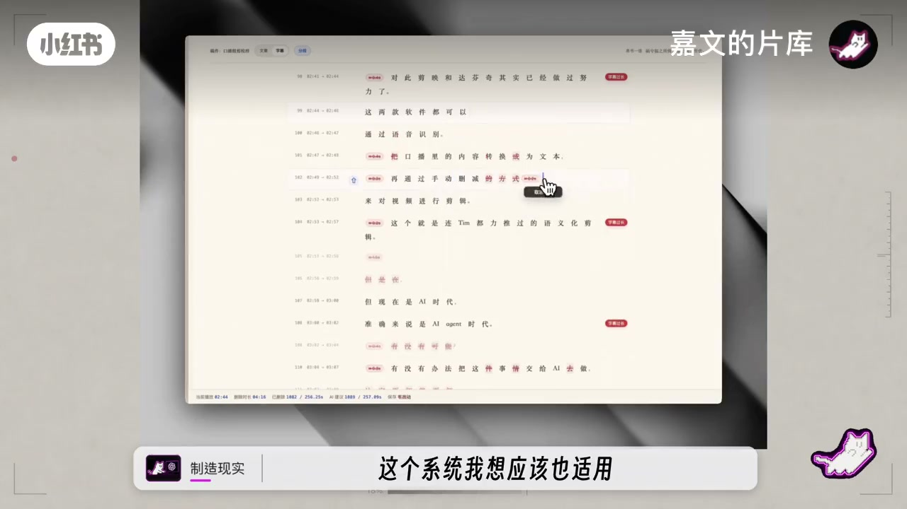
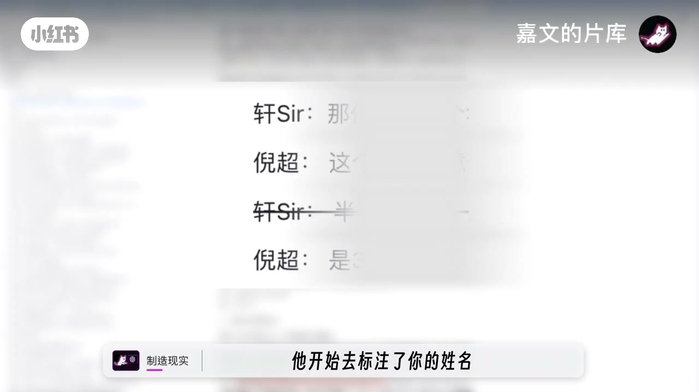
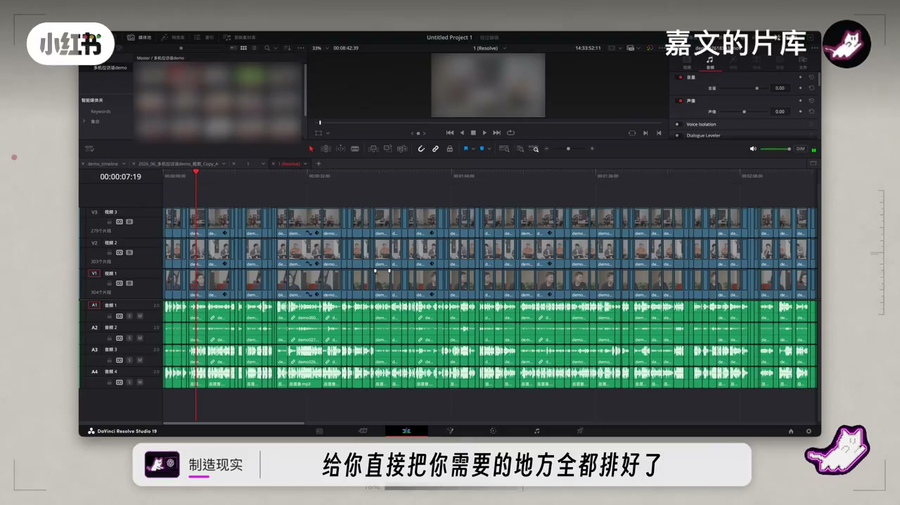

内容要点
一支 6 分 19 秒的 AI 剪辑产品交流视频：从评测新出现的 AI 剪辑工具 Headcats 切入，对比自家正在开发的智能剪口播系统。核心观点是：剪一条口播最痛苦的其实不是剪辑本身，而是删重复的话、找气口、对字幕这些重复性劳动。产品思路是让 AI 做粗剪标注、保留原始素材无损，人类专注在创作和精剪上。
知识结构
用了四五个小时 Headcats，体会到它做的努力。看起来像 Hyperframe 的套壳，但更全面：特效、插件都列好了，用起来像 FineCut 和剪映的复合体。
一期 25-30 分钟的视频要消耗一周剪辑时间。分析后发现很多是重复性工作：60% 的刷剪从 5 小时缩短到 30 分钟。
做了智能剪口播系统：喜欢剪映画线点击的剪口播功能，但对专业流程不合适——需要自然语言告诉大模型删重复话、剪气口，由 AI 标注需要剪掉的部分而不是直接剪。
升级成多机位：给任意数量机位，会标注谁在说话，快速完成粗剪，导出 XML 到达芬奇精剪。创造部分留给人类，重复工作交给 AI。
Headcats 像通用 AI 剪辑，套壳 Hyperframe 让没技术基础的人也能用；自家专注剪口播，场景单一但更深入：实时同步输出 SRT、无损粗剪、支持多机位同步。
下一步想自动完成切镜：音轨有声音就亮，全部有声切大镜。团队在杭州成立 AI 公司，正在用 AI 筛简历，欢迎 AI 经验者加入。
剪口播最痛苦的不是剪辑而是重复劳动。AI 剪口播的正确用法：让智能体做粗剪标注（删重复、剪气口）、保留原始素材无损、导出到专业软件精剪——创造部分留给人类，重复工作交给 AI。
00:00-00:57从 Headcats 说起：痛点在哪
视频从一次真实的产品体验开场：「Headcats 这个软件，今天早上其实也用了大概四五个小时。但仅仅这么一点，我也能体会到它所做出的努力。」
主播评价：「其实看起来特别像一个 Hyperframe 的套壳，完全是。但是我觉得它做的更全面一些。它把里面的比如说特效、专长 FX 这个特效插件，全都在里面给你列好了，你要拿什么你自己用就 OK。」
「它现在用起来像剪映吗？它现在用起来像 FineCut 和剪映的复合体。」在见过非常非常多所谓 Web coding 出来的自动剪辑软件之后，「我们去实际使用的时候，我们发现它并没有说那么好。但是这个 Headcats 我们用下来不是这样的，它非常依托于实际情况。」
其中考虑最好的一个点：「视频编码这个事。265 这个编码是要手填配的，为了绕开这个收费限制，他们给了你时间线工程文件。你可以剪好这个时间线，再导进你的达芬奇，去选择你需要的视频编码再导出。」

00:57-01:30剪一条口播最痛苦的是什么
「因为我们经常会去做这种多机位剪辑，这是非常重的剪辑工作。我们做一期 25 分钟到 30 分钟的视频，我们大概要消耗掉一周的时间，完全剪辑的时间。」
「我们大概分析了一下，很多工作是重复性的工作——60% 的刷剪方面，从 5 个小时缩短到 30 分钟。」
「我们就做了一个智能剪口波的这么一个东西，其实跟他们非常的类似，而且还可以剪方台（多机位）。如果你是做综艺的朋友，这个系统我想应该也适用。」


01:30-02:30AI 标注代替手动画线
「这位是选择（介绍）ClickScale 的开发者。」最初的想法：「我其实很喜欢剪映的剪口播的功能，像画线一样点击。但这个东西对于专业的创造者、专业的流程来说是非常不合适的，那个只是粗剪。」
「那个经典（精剪）我们需要在达芬奇里面去完成更专业的动作。当然如果你懒得自己画线，你可以用提示词告诉你的大模型——比如说把重复的话只保留最后一句，把中间说气口给剪掉，你可以直接用自然语言的对话给它去剪。」
关键点：「它剪完了你可以再核对。它不是帮你剪，它是帮你去标注哪些需要画掉。」画完之后可以导出一个 XML 的文件，导到达芬奇里完成后续的精剪操作。

02:30-04:40多机位与无损：专业流程的关键
「我们去开始把这个智能体升级成一个多机位。你可以直接任意数量的机位给到它，那么它会给你生成还是一个文字，但是这个文字已经不一样了——它开始去标注了你的姓名，每个人对话的人是谁、谁在说话，你可以这样去剪。」
「这个过程其实是非常快速的。剪完之后你再去做精剪，做一些过场，包括去优化一些切镜它的逻辑，加一些音效包装什么的。其实你只要花更多时间在你精剪上就可以了。」
「重复工作的部分你可以把它交给 AI。」创造部分还得是人：「比如说一些梗，AI 并不知道，因为它的数据是有延迟的。你让它实时搜索，它也不一定能理解那是什么意思。」
「顺便说一下，我们这个产品可以实时的同步输出 SRT 到你的时间线里面。它已经完成粗剪带 SRT，并且是无损的。」导入达芬奇后还是原素材的状态，「你还是在上面可以进行调色、加特效的各种东西，没有改变你的编码格式。」
04:40-06:19下一步与团队招募
「我们下一步希望做到的是，它可以自动完成切镜的东西。这个音轨有声音它就亮这个音轨，如果是所有的音轨都有声音，它就切大镜。这是我们目前的一个简单的逻辑，可以帮助多机位在切镜的时候自动筛选完成。」
团队计划在杭州设立 AI 公司。「我们真的没有时间招人，因为我们发现一边 Web coding 一边招人是一件非常痛苦的事情。」
「如果朋友你是一个自认为对 AI 非常有经验的朋友，欢迎你加入我们。我们会把这个邮箱留在下面，或者你可以私信或者评论区说一说你的经历。」
结尾评价 Headcats：「这个其实是给了我们一个新鲜的感觉。今天用了一下，其实我觉得可用度、可靠度都达到了一个比较能用的水平。这支团队是上海的，非常厉害。」
完整转录（211段）
以下文本由 Whisper medium 模型自动转录，可能存在少量识别误差，已尽可能修正。
Headcats这个软件呢
今天早上其实也用了大概四五个小时
但是仅仅这么一点
我也能体会到它所做出的努力
其实看起来特别像一个hyperframe的套格
完全是
但是我觉得它做的更全面一些
它把里面的比如说特效
专长fx这个特效插件
全都在里面给你列好了
你要拿什么你自己用就ok
它现在用起来像剪硬吗
它现在用起来像finecut和剪硬的复合体
在之前我们已经见过非常非常多
所谓web coding出来的这种
自动剪辑软件是很多了
但是我们去实际使用的时候
我们发现它并没有说那么好
但是这个headcat我们用下来不是这样的
它非常依托于实际情况
他们考虑一个点我觉得非常好
就是视频编码这个事儿
265这个编码我如果记得没错
这个是要手填配的
为了绕开这个收费限制
他们给了你时间线工程文件
你可以减好这个时间线
你可以再导进你的达芬奇
去选择你需要的视频编码再导出
因为我们经常会去做这种多机位剪辑
这是非常重的剪辑工作
我们做一期25分钟到30分钟的视频
我们大概要消耗掉一周的时间
完全剪辑的时间
我们大概分析了一下
就很多工作是重复性的工作
60%的刷剪方面
从5个小时缩短到30分钟
是
这个时间也挺磨人的
对
我们就做了一个智能剪口波的这么一个东西
其实跟他们非常的类似
而且还可以剪方台
如果你是做综艺的朋友
这个系统我想应该也适用
要不我给大家介绍一下这个系统
这位是选择
ClickScale的开发者
最初的想法就是说
我其实很喜欢剪硬的剪口波的功能
像画线一样点击
但这个东西对于专业的创造者
专业的流程来说是非常不合适
那个只是粗简
那个经典我们需要在达芬奇里面
去完成更专业的动作
当然如果你懒得自己画线
你可以提示词告诉你的大模型
比如说把重复的话
只保留最后一句
把中间说气口给剪掉
你可以直接用自然语言的对话给它去剪
然后它当然剪完了
你可以再核对
它不是帮你剪
它是帮你去标注哪些需要画掉
OK 当你的这个画完了之后
你可以导出
你也可以选择
你可以导出一个XML的文件
把这个文件导到你的达芬奇里面
完成后续的操作
也就是精简
所以我们去开始
把这个智能体我们去升级成一个多机位
你可以直接任意数量的机位给到它
那么它会给你生成还是一个文字
但是这个文字已经不一样了
它开始去标注了你的姓名
每个人对话的人是谁
谁在说话
你可以这样去剪
OK 这个过程其实是非常快速的
剪完之后你再去做精简
做一些过场
包括去优化一些切镜它的逻辑
加一些音效包装什么的
其实你只要花更多时间在你精简上就可以了
对 我只要想着这块的素材
我怎么样通过我的包装
我的剪辑
怎么样把它做得精彩一点
你只用想需要创造的部分就可以了
然后重复工作的部分
你可以把它交给AI
这是我们的主要思路
我们觉得其实创造这个东西还是得人来
比如说一些
然后这点梗
AI并不知道
因为它的数据是有延迟的
你让它实时搜索
它也不一定能理解那是什么意思
Chadcat和我们这个还真挺像
我们本来是马上计划要推出它
我觉得我们的场景还是不一样
Chadcat它的整理思路
就像是做一个通用剪辑
它其实是类似于Hyperframe这种产品的套壳
Hyperframe其实是一个这种题
但是没有一些AI或者是研发经验的纯剪辑师
它是不会用的
对 你还是需要有一些基础的
就Hyperframe这种AI剪辑软件
它是需要一些AI基础的
但是Chadcat它的思路我看起来
它更像是把Hyperframe这种东西
套壳做成一个不需要太多计算机基础的人
可以操作的一个东西
通用的AI剪辑软件
它是这个思路
我们其实还是说
专注剪刻不多
我们的场景还是比较单一了
顺便说一下
我们这个产品可以实时的同步输出SRT
到你的时间线里面
它已经完成粗剪带SRT
并且是无损的
你可以完成后续的所有的流程
就等于是你的素材
它导入进了达芬奇
给你直接把你需要的地方全都排好了
还是原素材的状态无损的
你还是在上面可以进行调色
加特效的各种东西
没有改变你的编码格式
任何的就是原始素材
这一点是非常好的
而且我觉得我们这一点
比较好的一点
我们这个还支持多机位
比如说我们上次做一次放弹
7个人有5个机位的前提下
我们可以完成5个机位的同时的同步的粗剪
这一下就搞定了
我们只用在后期里面筛选一下机位
基本上一个小时很快就过完它
我们下一步希望做到的是
它可以自动完成切镜的东西
这个音轨有声音
它就亮这个音轨
如果说是所有的音轨都有声音
它就切大镜
这是我们目前的一个简单的逻辑
可以帮助多机位在切镜的时候
也可以自动筛选完成
基本上我们不准分立了
我们现在还没有进行强行的测试
很快就能进行下一步了
招募一些内测的人员吗
我们将在杭州去设立一个AI的公司
我们真的没有时间招人
因为我们发现一边webcoding
一边招人是一件非常痛苦的事情
我们根本招不到人
所以如果朋友你是一个自认为
对AI非常有经验的朋友
欢迎你加入我们
我们会把这个邮箱留在下面
或者你可以私信或者评论区
可以说一说你的经历
我们来筛选一下
这样子我觉得应该快一点
我们收简历好慢
我们其实已经用AI筛简历
但是还是很慢
但目前就是这样
其实ChadCAD
这个其实是给了我们一个新鲜的感觉
今天用了一下
其实我觉得可用度可靠度
都达到了一个比较能用的水平
这支团队是上海的
非常厉害
是的跟我们很近
我们在杭州
向你们致敬
对
不要把我们杭州当成上海的后花园
这是不可以的
你知道这个梗吗
不知道这个
你看这个梗
AI就不知道
这也是我们下一步想去做的东西
再说一遍
我们非常需要人
如果你在杭州
或者你有意向从事AI工作
欢迎你来联系我们
我们这一期视频内容就到这里结束了
如果说也想试一试
我们这个AI检口播的朋友们
给我们留言
我们会不会给你发送给他们的仓库
对
是吧
好这期就到这里
我们再见